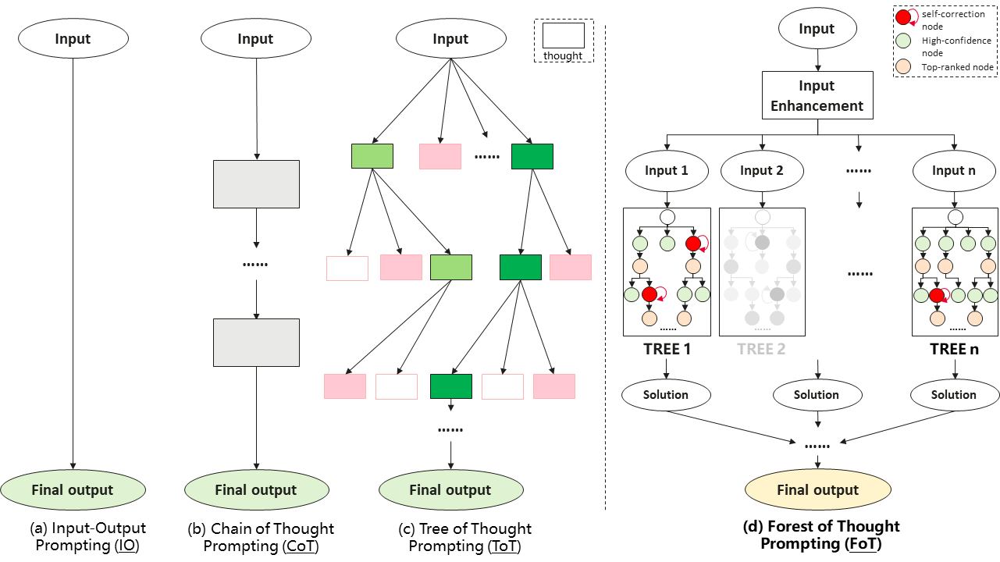

FoT Reference Diagram

Forest-of-Thought (FoT) scales reasoning by running several thought trees, activating promising branches sparsely, correcting weak branches, and using consensus over the forest. In ToricGT the same idea is moved from prompt strings into embedding space: each branch is a graph-valued hidden trajectory, each edge is a graph edit or continuous displacement, and branch rewards are tied to BPB delta, verifier score, topological stability, and toric fan margins.
In this hand-authored example, a source routing change exchanges the payloads attached to two anchors. The target uses different anchor names and payloads. Match anchors by their declared roles A, B, and C, then transfer the change to the target.
Each card lists a root and its anchors. Each arrow gives the payload attached to that anchor. For each starting role, follow its payload to its new role. A candidate passes when every destination agrees with the source change.
Compare only the branch below the selected root on each side. The index and lobby belong to the enclosing trees.
Binder → Index and routing branch
Binder → Index and routing branch
Building → Lobby and sorting branch
Building → Lobby and sorting branch
| From role | Source to | Target to | Result |
|---|---|---|---|
| A | B | B | Preserved |
| B | A | A | Preserved |
| C | C | C | Preserved |
Pass. All three destinations agree.
Building → Lobby and sorting branch
| From role | Source to | Target to | Result |
|---|---|---|---|
| A | B | C | Mismatch |
| B | A | B | Mismatch |
| C | C | A | Mismatch |
Fail. The candidate sends payloads to different anchor roles.
Compare each complete rooted tree. All three anchors share one root on each side.
| From role | Source to | Target to | Result |
|---|---|---|---|
| A | B | B | Preserved |
| B | A | A | Preserved |
| C | C | C | Preserved |
Pass. All three destinations agree.
| From role | Source to | Target to | Result |
|---|---|---|---|
| A | B | C | Mismatch |
| B | A | B | Mismatch |
| C | C | A | Mismatch |
Fail. The candidate sends payloads to different anchor roles.
Compare both rooted trees together. The A ↔ B exchange crosses the two roots on both sides and leaves the anchors attached to their original roots.
| From role | Source to | Target to | Result |
|---|---|---|---|
| A | B | B | Preserved |
| B | A | A | Preserved |
| C | C | C | Preserved |
Pass. All three destinations agree.
| From role | Source to | Target to | Result |
|---|---|---|---|
| A | B | C | Mismatch |
| B | A | B | Mismatch |
| C | C | A | Mismatch |
Fail. The candidate sends payloads to different anchor roles.
Both candidates preserve the roots, the number of attachments, and the branching shape. You need the directed role-to-role correspondence to decide which candidate transfers the source change. The tables are computed from the displayed assignments in the page builder. This is a schematic demonstration.
Related work on exemplar prompting, relational correspondence, cross-domain generation, and embedding arithmetic. Yasunaga et al. · Minegishi et al. · Shen et al. · Korchinski et al.
Each group keeps the query C and its candidate list fixed. Changing the exemplar edit A → B
changes which candidate is correct. The three edits remove x + 0,
x − 0, or x × 1, retaining the left operand in each case.
Operand roles matter. When x = 4, x − 0 is 4, while
0 − x is −4. Replacing 0 − x with x changes
the value.
| Scope | Cases | Offset top-1 | Unshifted top-1 | Only gold accepted | Negatives accepted |
|---|---|---|---|---|---|
| Subtree | 48 | 100.00% | 33.33% | 100.00% | 0.00% |
| Tree | 48 | 93.75% | 23.44% | 100.00% | 0.00% |
| Forest | 48 | 88.54% | 0.00% | 100.00% | 0.00% |
| All scopes | 144 | 94.10% | 18.92% | 100.00% | 0.00% |
Both retrieval baselines use hand-engineered counts of node and edge types.
Offset retrieval ranks candidates near B − A + C. Unshifted retrieval uses
C. Expected top-1 averages over a uniform choice among tied candidates.
The exact verifier infers the exemplar edit and checks the resulting directed, typed structure at the requested scope. The last two columns show how often only the gold candidate was accepted and the fraction of negative candidates accepted. The benchmark runs independently of model training. Benchmark source

The nodes, edges, and qualitative metrics are hand-authored illustrations. Select a vertex to see an illustrative local tree and its proposed training signals.
The existing checkpoint audit applies the trained FoT head to selected hidden states. Its node values and policy scores come from that checkpoint evaluation. The renderer assembles the displayed tree edges afterward from those outputs.
Open the branching reasoning report · Inspect the trace JSON
Each state is s=(G,H,Σ,μ,M): a reasoning graph, hidden table, toric/fan chart, moment coordinate, and memory pointer.
Actions add/merge thought nodes, move inside a normal cone, cross a wall, retrieve an analogy, or flatten a graph output for BPB scoring.
Reward combines byte likelihood improvement with structural diversity, GUDHI persistent-homology stability, and toric/BGG certificate consistency.